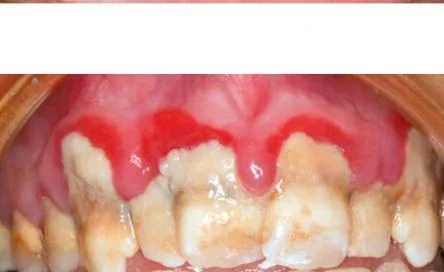
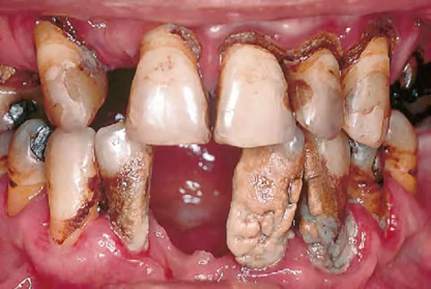
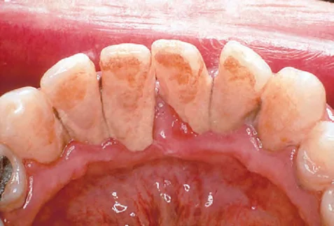
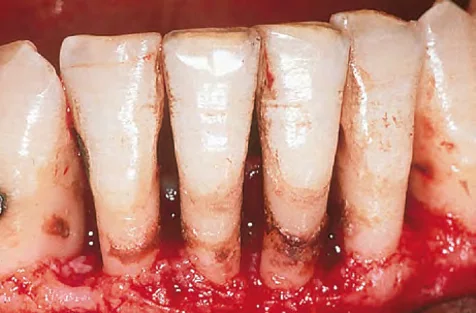

نسخه استخراجشده؛ ترجمه یا تأیید علمی انجام نشده است. وضعیت: captured
جرم چیزی جز بیوفیلم کلسیفیهشده نیست. همیشه لایهای از پلاک زنده روی سطح آن قرار دارد.


| جرم فوقلثهای | جرم زیرلثهای | |
|---|---|---|
| منبع مواد معدنی | بزاق | مایع شیار لثه |
| رنگ | سفید تا زرد | قهوهای تیره تا سیاه |
| سختی | کمتر | بیشتر و متراکمتر |
| چسبندگی | کمتر | محکمتر |
⚠️ رنگ تیره جرم زیرلثهای از محصولات خونی ناشی از التهاب و خونریزی میآید؛ یعنی خودِ رنگ یک نشانه است.
جرم فوقلثهای در نواحی مقابل مجاری بزاقی بیشترین تجمع را دارد:

سطح باکال مولرهای بالا ← مقابل مجرای استنسن (پاروتید)
سطح لینگوال ثنایاهای پایین ← مقابل مجاری وارتون و بارتولین (سابمندیبولار و سابلینگوال)
شروع معدنی شدن: ۲۴ تا ۷۲ ساعت پس از تشکیل پلاک
رسیدن به بلوغ: حدود ۱۲ روز
📌 پیام بالینی: اگر بیمار هر ۲۴ ساعت پلاک را کامل حذف کند، جرم عملاً فرصت تشکیل پیدا نمیکند.
هیدروکسیآپاتیت — فراوانترین
اکتاکلسیم فسفات
بروشیت — بیشتر در جرم تازه
ویتلاکیت — بیشتر در نواحی خلفی و جرم قدیمیتر
اتصال از طریق پلیکل: سادهترین حالت؛ نسبتاً آسان جدا میشود.

قفل شدن مکانیکی در بینظمیهای سطح: در ترکها، حفرات و خراشهای سطح ریشه.
انطباق نزدیک با حفرات تحلیل سمان (Resorption Bays): جرم داخل فرورفتگیهای تحلیلرفته جا میگیرد.
نفوذ به داخل سمان: دشوارترین حالت؛ برای حذف کامل باید لایهای از سمان برداشته شود.
این یکی از مهمترین ظرافتهای مفهومی پریودنتیکس است:
جرم بهخودیخود عامل بیماریزای اصلی نیست؛ مادهای معدنی و نسبتاً بیاثر است.
اهمیت واقعی جرم در این است که یک عامل نگهدارنده پلاک است: سطحی زبر و متخلخل که همیشه با لایهای از بیوفیلم زنده پوشیده شده و تمیز کردنش برای بیمار غیرممکن است.
پس علت اصلی همان بیوفیلم روی جرم است، اما این تمایز مفهومی هرگز بهمعنای بیاهمیت بودن حذف جرم نیست.
⚠️ اشتباه رایج ۱: منبع معدنی جرم زیرلثهای مایع شیار لثه است، نه بزاق.
⚠️ اشتباه رایج ۲: جرم عامل نگهدارنده است نه عامل اولیه؛ اما حذف آن همچنان ضروری است.